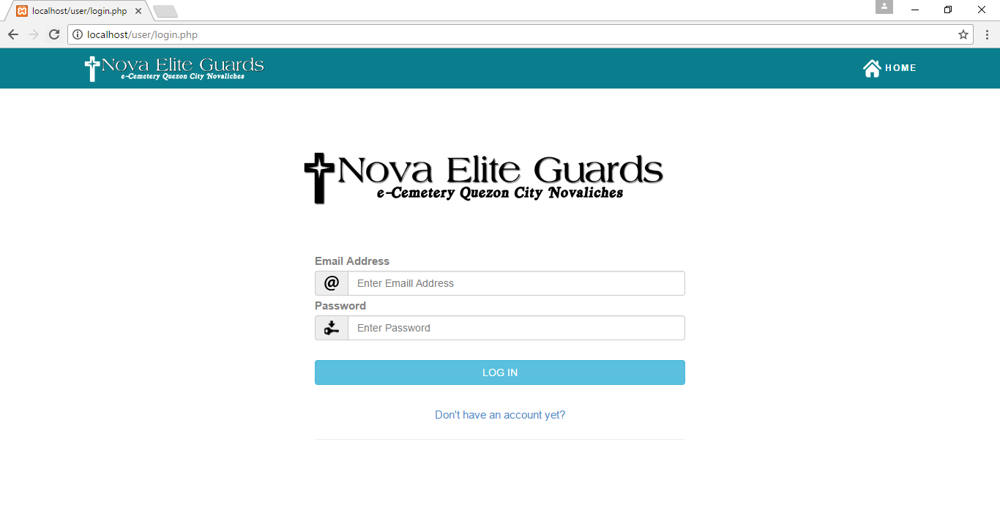
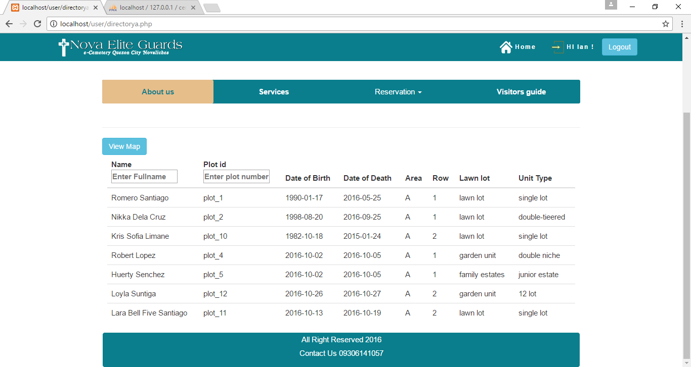
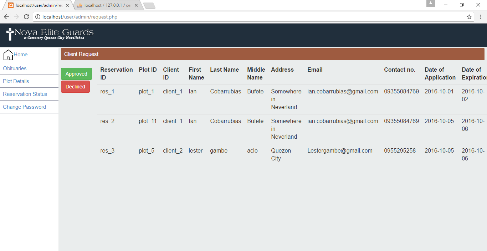

<Doctype! html>
<html>
<link rel="stylesheet" href="bootstrap.min.css">
 <link rel="stylesheet" href="css.css">
  <script src="jquery.min.js"></script>
  <script src="bootstrap.min.js"></script>
    <script type="text/javascript" src="jquery-2.1.3.min.js"></script>
    <script type="text/javascript" src="cycle2.js"></script>
	
	<body background="white" style="background-size:cover; opacity:.9;">
	<div class="rcm">
			</img>
			<div class="cnecontainer">
			<hr style="border-color:lightblue;">
			<p id="rcm" style="font-family:Roboto;margin-top:-4%; margin-left:4%;color:black;">Login</p>
		</div>
	</div>	
	<div class="rcms">
			</img>
			<div class="cnecontainer">
			<hr style="border-color:lightblue;">
			<p id="rcms" style="font-family:Roboto;margin-top:-4%; margin-left:4%; color:black;">Home</p>
		</div>
	</div>	
	<div id="cemen">
			<p style="font-family:Roboto;">Online Cemetery Management System</p>
		</div>
		<ul class="pbs" style="margin-left:7%;list-style:none;color:black;">
			<label style="margin-left:-5%;">Module</label<br>
			<li>Login</li>
			<li>Admin</li>
			<li>Home</li>
			<li>Services</li>
			<li>Reservation</li>
			<li>Visitors Guide</li>
			<li>Obituaries</li>
			<li>Plot Details</li>
			<li>Request Status</li>
			<li>Change Password</li>
			<hr style="border-color:black; margin-top:2%;">
			<li>Description <br>Online Cemetery Management System is generic project for web development,this system allow user to login and redirect on webpage base on the user level where they belong.This system can do crud promote cemetery services, reservation and give direction for visitors for visit day and have a plot details, change password and request module for reservation of client.</li>
		</ul>
	<div id="container">
		<div id="slideshow" class="cycle-slideshow"
		data-cycle-fx = "fade"
		data-cycle-speed = "600"
		data-cycle-timeout = "0"
		data-cycle-pager = "#pager"
		data-cycle-pager-template ="<a herf='#'>"
		data-cycle-next = "#nextcem"
		data-cycle-prev = "#prevcem"
		data-cycle-manual-fx = "scrollHorz"
		data-cycle-manual-speed = "400"
		data-cycle-pager-fx = "fade">
        
        
		
		
		
		
		
		
		
		
		
		
		
		
		
		
		
    </div>
    <div id="pager"></div>
    
    
</div>
<a href="index.html"><input type="button" name="Back" value="Back"></a></input>
	</body>
	<script src="http://ajax.googleapis.com/ajax/libs/jquery/1/jquery.min.js"></script>
<script src="jquery.fittext.js"></script>
<script type="text/javascript">
		$("#cemen").fitText();
		$("ul").fitText(1.2, { minFontSize: '8px', maxFontSize: '25px' });
		$("#rcm").fitText(1.2, { minFontSize: '10px', maxFontSize: '20px' });
		$("#rcms").fitText(1.2, { minFontSize: '10px', maxFontSize: '20px' });
	</script>
</html>